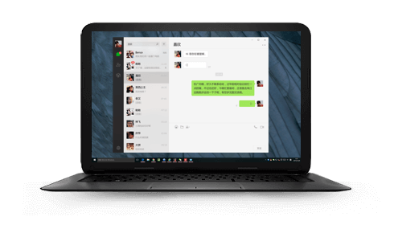

首页
帮助与反馈
公众平台
开放平台
微信支付
微信广告
企业微信
表情开平台
微信网页版
微信，是一个生活方式
超过十亿人使用的手机应用
支持发送语音短信、视频、图片和文字
可以群聊，仅耗少量流量，适合大部分智能手机
免费下载
忘记了微信账号或密码？
自主接触登陆或者功能限制
冻结或解冻微信账号

微信网页版
在浏览器使用微信
了解更多
微信Mac版
极致简洁，迅捷沟通
了解更多
微信Windows版
让沟通更方便
了解更多
最新消息
04-02
微信 7.0.13 for Android 正式版发布
04-01
微信 7.0.12 for iOS 正式版发布
02-28
微信 2.3.30 for Mac 正式版发布
01-19
微信 2.8.0 for Windows 正式版发布
02-21
微信外部链接内容管理规范
01-10
微信 2.8.0 for windowsphone 正式版发布